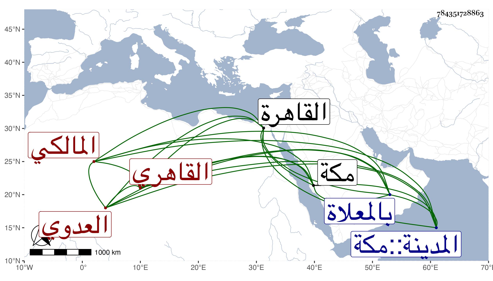

0902Sakhawi.DawLamic.ITO20230111-ara1.EIS1600.784351728863
Biography ID: 784351728863
20
آمنة ابنة الشمس محمد بن علي بن محمد بن عبد الرحمن بن بلال العدوي القاهري المالكي والدتي الماضي أبوها وأخوها أبو الحسن علي ، ولدت قريبا من سنة عشر وثمانمائة بالقاهرة ونشأت في كنف أبويها فزوجها أبوها بابن فقيهه الفخر عثمان القمني وكان فاضلا خيرا فلم يلبث أن مات وتزوجها الوالد واستولدها عدة أولاد منهم كاتبه ثم عبد القادر ثم أبو بكر لطف الله بهم ؛ وحجت معي غير مرة وجاورت بالحرمين مدة وشملتها إجازة غير واحد من المعتبرين بل سمعت على شيخنا وغيره ، وفيها معروف وشفقة سيما على ذوي رحمها ومحافظة على الصلوات والصوم مع صفاء وسرعة بادرة ؛ ومات كل من الأخوين في غيبتها معي فصبرت عوضنا الله وإياها خيرا ثم عادت معي إلى مكة فحجت ودامت حتى ماتت في ليلة الخميس سادس عشر رمضان سنة سبع وتسيعين شهيدة بالبطن والغربة بعد تعلل طويل وصلى عليها عند باب الكعبة ثم دفنت يوم الخميس بالمعلاة مجاورة لقبور الاسياد صفي الدين وعفيف الدين وذويهما وللتقي بن فهد وذويه فكانت بقبرها ليلة الجمعة رحمها الله وعوضها الجنة وجزاها عني خيرا .
